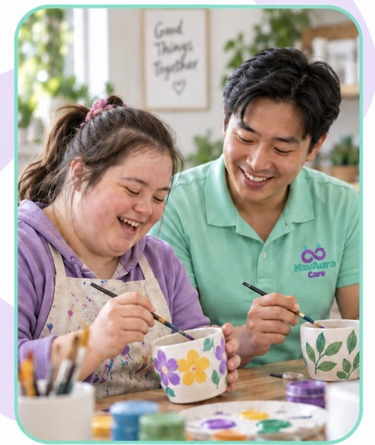
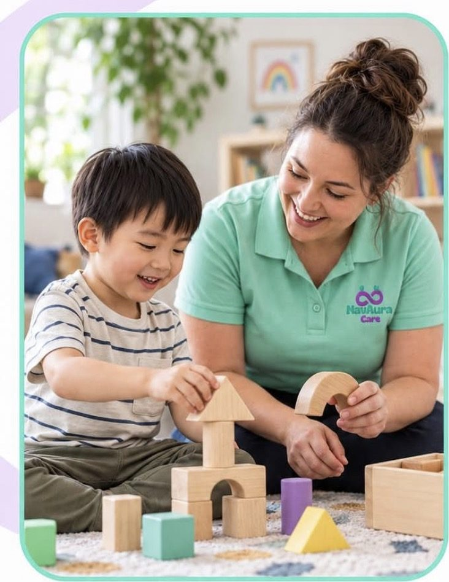
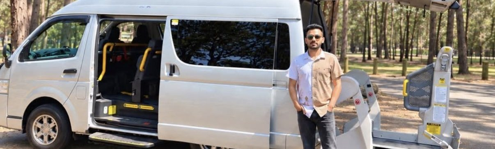
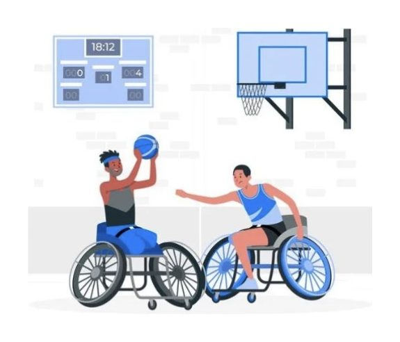

Daily personal activities
Personal care, household tasks and overnight support, delivered with dignity.
Learn more
High intensity support
Support for complex health needs, including 2:1 support.
Learn morePsychosocial disability support
Recovery-focused support for participants living with psychosocial disability.
Learn more
Supported Independent Living
SIL, SDA and tenancy support to live as independently as possible.
Learn more
Community participation
1:1 and group activities to connect with the community.
Learn moreLife skills development
Building skills for greater independence at home and in the community.
Learn more
Employment and study support
Support to find, start and keep a job or course of study.
Learn more
Early childhood supports
Family-centred support for young children, including children with autism.
Learn more
Accessible transport
Wheelchair-accessible transport with a support worker.
Learn more
Support connection
Help to understand your plan and connect with the right supports.
Learn moreOur allied health network
We do not provide therapy ourselves, but we work closely with trusted partner organisations. If you need therapy alongside your support, we will connect you with the right professionals and work with them as one team.
- Physiotherapists
- Exercise physiologists
- Speech pathologists
- Behaviour support practitioners
- Social workers

Every service includes
- Culturally inclusive supportWorkers who respect your language, faith, diet and family.
- Consistent workersFamiliar faces and reliable rosters, 24/7.
- Clear pricingWithin the NDIS Price Limits, explained in your service agreement.
Not sure what you need?
Tell us about your situation and goals, and we will help you identify the supports that suit your plan.